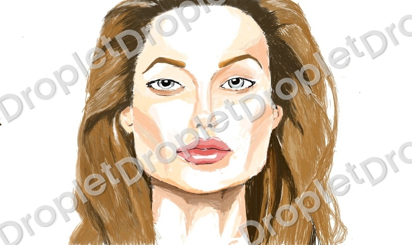
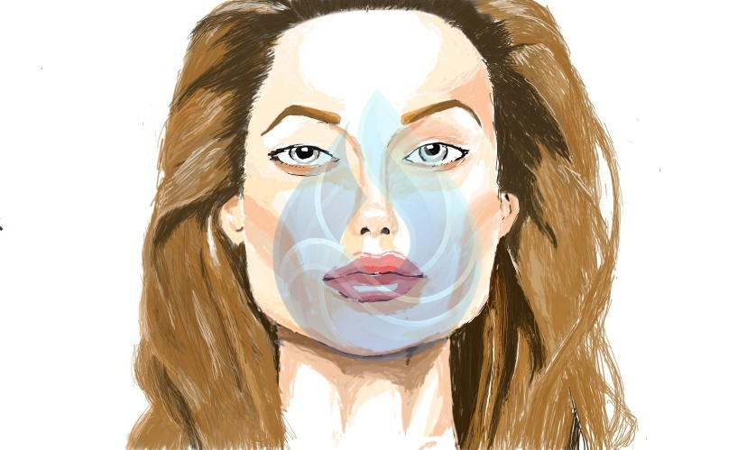

Watermark photos fast with text or logos.
Droplet is an easy watermark app for creators. Add text or logo marks, apply them to multiple photos at once, and fine-tune opacity, size, and rotation.
Protect your work with simple, fast controls.
Add text or logo watermarks, batch apply to many photos, and adjust transparency, size, and rotation with ease.
Batch watermarking
Select multiple photos and apply one watermark style in seconds.
Position & rotate
Move, resize, and rotate your watermark to fit every photo.
Text or logo marks
Use a typed watermark or your logo image with clean styling.
Advanced controls
Adjust opacity and size, then unlock extra spacing controls in Premium.
Consistent branding without the busywork.
Save a watermark style once, then apply it across every set in a few taps.
- Save text or logo presets for quick reuse
- Batch apply one style to a whole folder
- Fine-tune opacity, size, and rotation
From logo to locked-in results.
Three easy steps keep your brand consistent and your edits fast.


How to use Droplet
Three quick steps to get a clean watermark every time.

Select photos
Pick a single image or multiple photos at once.

Add your mark
Use text or a logo, then adjust size and opacity.

Export
Save the watermarked images instantly.
Built for creators on the move.
Lightweight, touch-friendly controls keep your edits fast on any phone.